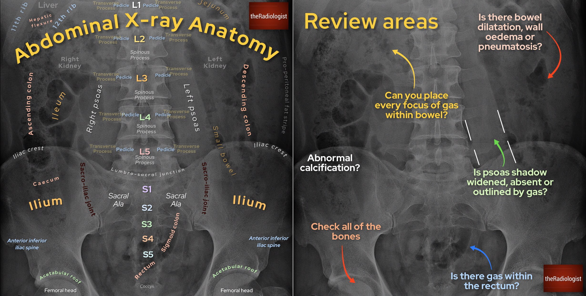

1. الجهاز الهضمي في البطن (Digestive System)
المعدة (Stomach): عضو هضمي عضلي يظهر بوضوح بالصور الشعاعية للبطن العلوي.
الأمعاء الدقيقة (Small Intestine): تقسم إلى الاثنى عشر (Duodenum)، الصائم (Jejunum)، واللفائفي (Ileum).
الأمعاء الغليظة / القولون (Large Intestine / Colon): تحيط بالبطن وتتضمن القولون الصاعد، النازل، والسينى.
2. الجهاز الكبد الصفراوي والبنكرياس (Hepatobiliary System)
الكبد (Liver): أكبر غدة بالبطن تقع بالربع العلوي الأيمن وتتكون من فصين (Right and Left Lobes).
المرارة (Gallbladder): كيس مخزون العصارة الصفراوية (Bile) ويقع أسفل الكبد.
البنكرياس (Pancreas): غدة تقع خلف المعدة لها مهام هضمية وهرمونية.
3. عظام الحوض (Pelvic Bones)
عظما الورك (Innominate Bones): يتكون كل منها من الحرقفة (Ilium)، الإسك (Ischium)، والعانة (Pubis).
العجز (Sacrum): عظم مثلث الشكل يتكون من فقرات مندمجة بمؤخرة الحوض.
العصعص (Coccyx): عظم صغير يقع في أస్فل العمود الفقري.
📷 صور شعاعية
صور شعاعيه مهمة

2. صور شعاعيه مهمة

صور شعاعيه مهمة .